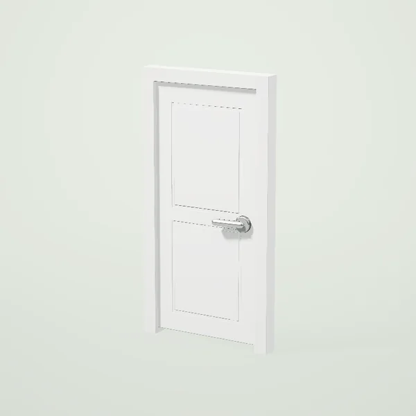
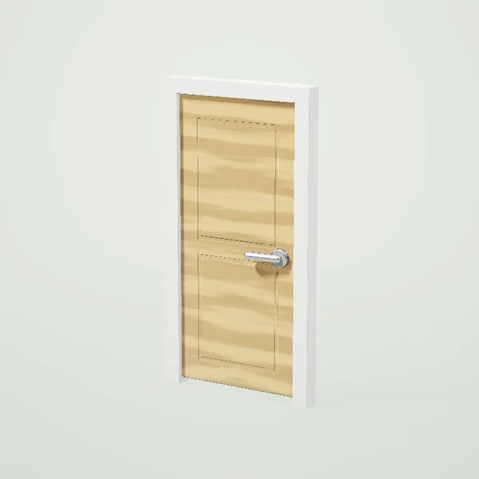
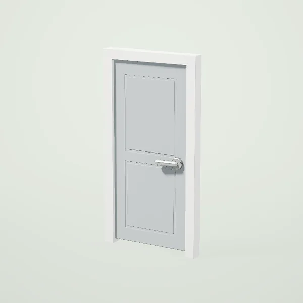
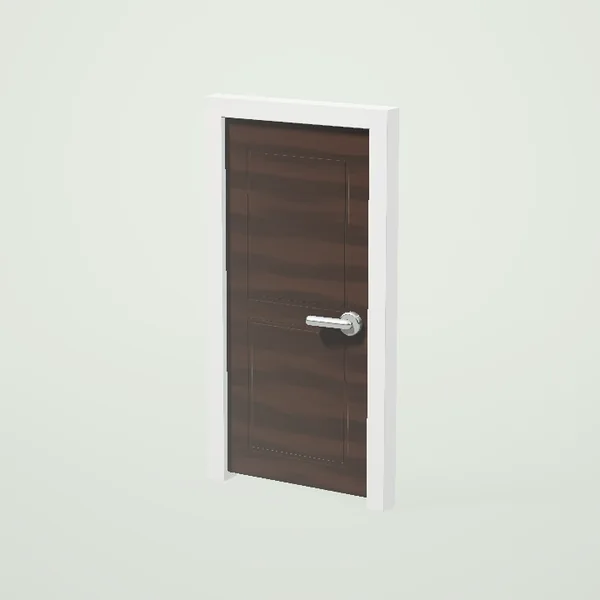
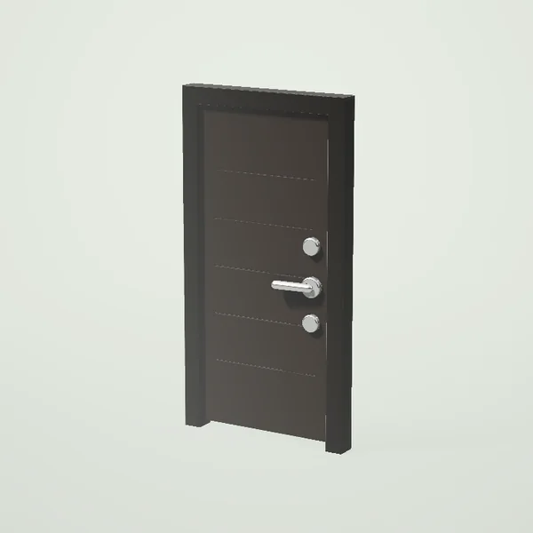
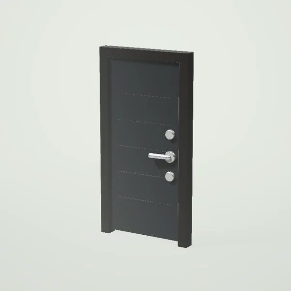
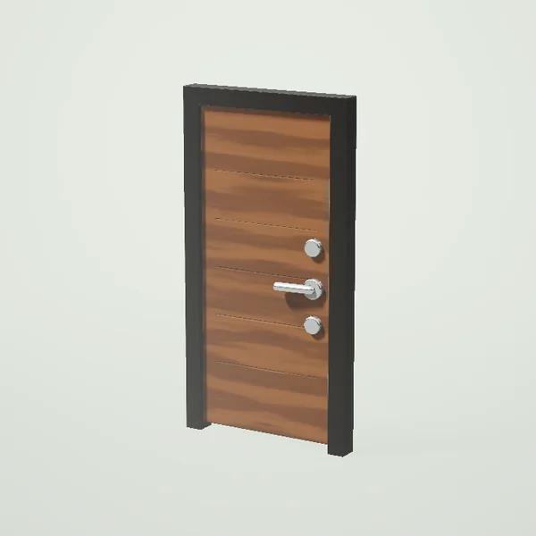
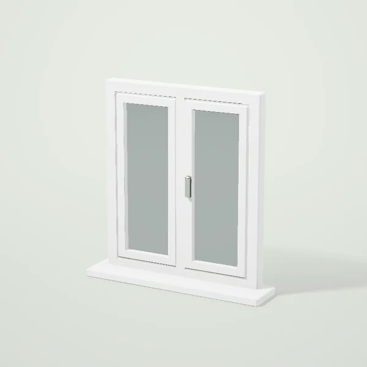
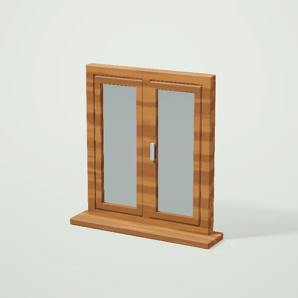
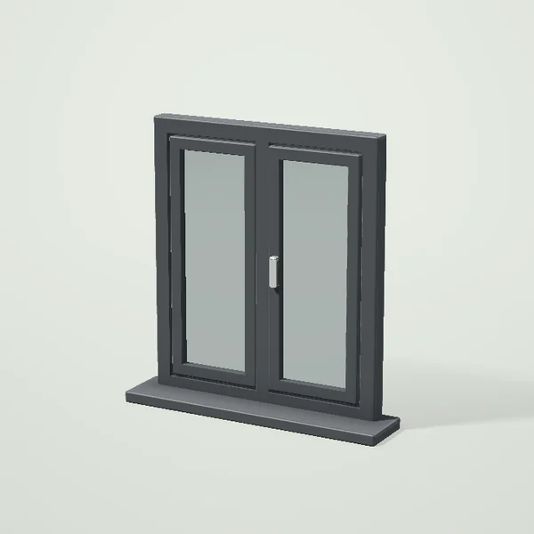

Двери и окна в Ташкенте
Межкомнатные двери

Дверь межкомнатная 80 см, белаяот 1 450 000 сум
Дверь межкомнатная 80 см, дубот 1 595 000 сум
Дверь межкомнатная 80 см, сераяот 1 450 000 сум
Дверь межкомнатная 80 см, венгеот 1 667 500 сум- Дверь межкомнатная 60 см, белаяот 1 363 500 сум
Входные двери

Дверь входная металлическаяот 3 861 000 сум
Дверь входная с терморазрывомот 6 053 000 сум
Дверь входная, отделка МДФ «орех»от 5 070 000 сум
Окна ПВХ

Окно ПВХ 1200×1400, двустворчатоеот 2 100 000 сум- Окно ПВХ 600×1400, одностворчатоеот 1 260 000 сум

Окно ПВХ ламинированное «Дуб»от 2 940 000 сум
Окно ПВХ антрацит 1200×1400от 2 730 000 сум